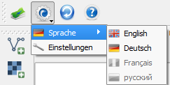
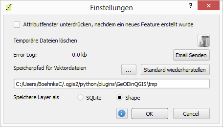

The settings can be done at the gear wheel symbol at the toolbar. This includes the operating language and the plugin's general settings.  General Settings  Usually, when creating new objects with the edting mode of QGIS, a window opens, for the input of attribute data. This window always appears, if a new feature was added to map canvas. To suppress this window the option "Suppress attribute form pop-up after feature creation" may be activated. Several temporary files will be created when working with the plugin. If they are no longer needed the whole directory can be emptied by clicking the button. If an error occurs, it will be written to the error log file. There is the possibility to send an email to the GeODin support. This will open the Email browser automatically. The error message and the error log file must attached to the email manually. Vector files, which were created with the plugin, will be stored in the temporary directory if not specified. This directory may be saved at another location in the file system. It is also possible to restore the default path. The vector files can be saved in two different formats. The usage of SQLite offers the advantage of fieldnames longer than 8 characters, whereas the fieldnames of shape files are limited to 8 characters. However the performance of shape files is much better.